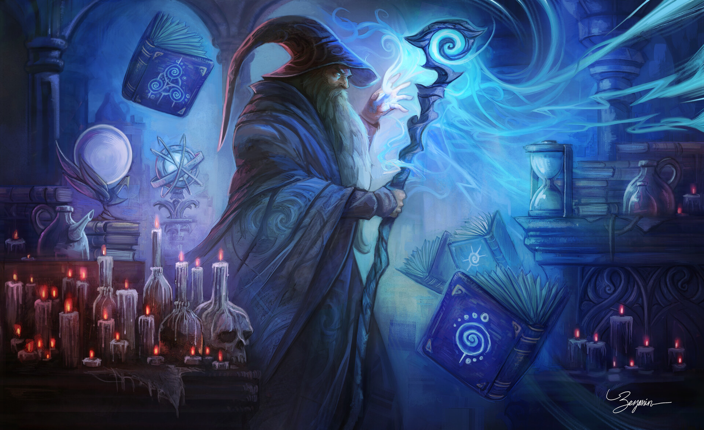

Школы магии волшебника
Подчиняя реальность своей воле посредством тщательного изучения, волшебники являются воплощением фразы "разум над материей", меняя целые миры только с помощью своего острого интеллекта и древних знаний. В своём стремлении разгадать и переделать фундаментальные законы бытия многие волшебники начинают ценить преимущества узкой специализации своих знаний.
Почти любое заклинание принаддежит к одной из восьми школ магии. Каждая школа - это группа заклинаний со схожим принципом работы. Существует несколько универсальных заклинаний (желание, мистическая метка, мелкие фокусы, ограниченное желание и постоянство), не принадлежащих ни к одной из восьми школ.

Школа воплощения
Специалист по воплощению занимается призывом существ и магических явлений.
СПОСОБНОСТИ
Долговременный призыв (Св): Когда вы применяете заклинание школы воплощения (призывание), его длительность увеличивается на количество раундов, равное 1/2 вашего уровня волшебника (минимум 1).
Эти раунды не удваиваются применением черты Длительное заклинание.
На 20 уровне вы способны увеличить длительность любого своего заклинания призыв чудовища до постоянного, но у вас может быть одновременно только одно такое постоянно действующее заклинание. Если вы выбираете в качестве постоянного заклинания новое, предыдущее немедленно прекращает действовать.
Кислотный дротик (Пс): В качестве основного действия вы можете метнуть дротик из кислоты в любого противника в радиусе 30 футов от вас. Это дистанционная атака касанием. Дротик наносит 1d6 урона от кислоты + 1 за каждые два ваших уровня волшебника. Вы можете применять эту способность 3 + модификатор вашего Интеллекта раз в день. УкМ против кислотного дротика не помогает.
Шаги сквозь пространство (Пс): Начиная с 8 уровня вы можете применять эту способность, чтобы телепортироваться на дистанцию до 30 футов за уровень волшебника в день в качестве основного действия. Это общее расстояние нельзя дробить на шаги меньше 5 футов. Вы при этом не провоцируете внеочередных атак. С собой можно брать других согласных на это существ, но на каждое нужно тратить соответствующее количество футов дистанции.

Школа иллюзии
Специалисты по иллюзиям применяют магию, чтобы творить видения, вводящие в заблуждение и поражающие врагов.
СПОСОБНОСТИ
Долговременный призыв (Св): Когда вы применяете заклинание школы воплощения (призывание), его длительность увеличивается на количество раундов, равное 1/2 вашего уровня волшебника (минимум 1).
Эти раунды не удваиваются применением черты Длительное заклинание.
На 20 уровне вы способны увеличить длительность любого своего заклинания призыв чудовища до постоянного, но у вас может быть одновременно только одно такое постоянно действующее заклинание. Если вы выбираете в качестве постоянного заклинания новое, предыдущее немедленно прекращает действовать.
Кислотный дротик (Пс): В качестве основного действия вы можете метнуть дротик из кислоты в любого противника в радиусе 30 футов от вас. Это дистанционная атака касанием. Дротик наносит 1d6 урона от кислоты + 1 за каждые два ваших уровня волшебника. Вы можете применять эту способность 3 + модификатор вашего Интеллекта раз в день. УкМ против кислотного дротика не помогает.
Шаги сквозь пространство (Пс): Начиная с 8 уровня вы можете применять эту способность, чтобы телепортироваться на дистанцию до 30 футов за уровень волшебника в день в качестве основного действия. Это общее расстояние нельзя дробить на шаги меньше 5 футов. Вы при этом не провоцируете внеочередных атак. С собой можно брать других согласных на это существ, но на каждое нужно тратить соответствующее количество футов дистанции.

Школа некромантии
Специалисты по некромантии управляют и используют против своих врагов омерзительную силу смерти.
СПОСОБНОСТИ
Владыка нежити (Св): Вы получаете в качестве дополнительной черты либо Подчинение нежити, либо Изгнание нежити. Вы получаете способность проводить энергию 3 + модификатор вашего Интеллекта раз в день, но только для применения выбранной черты. Вы можете усиливать эту способность другими чертами, такими как Дополнительная божественная сила и Великая божественная сила, но не чертами, меняющими способы ее применения (такими как Проводник энергии стихий или Проводник мировоззрения). СЛ испытаний против этих эффектов равна 10 + 1/2 вашего уровня волшебника + модификатор вашей Харизмы.
На 20 уровне нежить не может добавлять свое сопротивление проводимой энергии к испытаниям против этих эффектов.
Могильное прикосновение (Пс): В качестве основного действия вы можете совершить атаку касанием в ближнем бою, от которой живое существо становится потрясенным на количество раундов, равное 1/2 вашего уровня волшебника (минимум 1). Если вы касаетесь уже потрясенного существа, то оно становится напуганным на 1 раунд, если количество его КЗ меньше вашего уровня волшебника. Вы можете применять эту способность 3 + модификатор вашего Интеллекта раз в день.
Глаза некроманта (Св): Начиная с 8 уровня вы можете обрести слепозрение (10 футов) на количество раундов в день, равное вашему уровню волшебника. Эти раунды необязательно должны идти подряд.
Вы можете таким образом обнаруживать только живых существ и нежить (и понимать, является ли существо живым или нежитью). Конструкции и иные существа, не являющиеся ни живыми, ни мертвыми, при этом не видны. Расстояние, на которое вы видите, увеличивается до 20 футов на 12 уровне и еще на 10 футов за каждые четыре уровня после 12.

Школа очарования
Специалист по очарованию управляет и манипулирует разумом своих жертв.
СПОСОБНОСТИ
Чарующая улыбка (Св): Вы получаете бонус +2 (усиление) к Блефу, Дипломатии и Запугиванию. Этот бонус возрастает на 1 за каждые пять ваших уровней волшебника до максимума в +6 на 20 уровне.
Кроме того, на 20 уровне любое заклинание школы очарования, против которого вы успешно прошли испытание, отражается в того, кто его сотворил, как при действии отражения заклинаний.
Введение в ступор (Пс): Проведя по живому существу атаку касанием в ближнем бою, вы повергаете его в ступор на 1 раунд. На существ, количество КЗ которых выше, чем ваш уровень волшебника, эта особенность не действует. Вы можете применять эту способность 3 + модификатор вашего Интеллекта раз в день.
Аура отчаяния (Св): Начиная с 8 уровня вы можете окружить себя аурой отчаяния радиусом в 30 футов. Все враги в пределах ауры получают штраф -2 к атакам, урону, испытаниям, проверкам навыков и характеристик. Эффект длится количество раундов, равное вашему уровню волшебника. Эти раунды необязательно должны идти подряд. Это эффект, влияющий на разум.

Школа превращения
Специалисты по превращениям меняют своей магией мир.
СПОСОБНОСТИ
Телесное усиление (Св): Вы получаете бонус +1 (усиление) к одной физической характеристике - Силе, Ловкости или Выносливости.
Он увеличивается на 1 за каждые пять уровней волшебника до максимума в +5 на 20 уровне. Вы можете присвоить этот модификатор другой характеристике, когда подготавливаете заклинания.
На 20 уровне этот модификатор применяется к двум физическим характеристикам по вашему выбору.
Телекинетический удар (Пс): В качестве основного действия вы можете нанести удар телекинезом по любому противнику в радиусе 30 футов от вас. Совершив дистанционную атаку касанием, вы наносит е 1d4 дробящего урона + 1 за каждые два ваших уровня волшебника. Вы можете применять эту способность 3 + модификатор вашего Интеллекта раз в день.
Смена формы (Пс): Начиная с 8 уровня вы можете преобразиться на количество раундов в день, равное вашему уровню волшебника. Эти раунды необязательно должны идти подряд.
В остальном эта способность работает как заклинания облик зверя II или стихийная форма I. Начиная с 12 уровня она работает как облик зверя III или стихийная форма II.

Школа преграждения
Специалист по преграждению защищается магией от магии и практикуется в защитных и охранных чарах.
СПОСОБНОСТИ
Устойчивость (Экс): При подготовке заклинаний выберите стихию - у вас появляется устойчивость 5 к ней. Вы можете менять стихию каждый день. На 11 уровне эта устойчивость возрастает до 10.
На 20 уровне она превращается в невосприимчивость к выбранной стихии.
Защитное поле (Св): В качестве основного действия вы можете создать вокруг себя защитное поде радиусом 10 футов, действующее на протяжении количества раундов, равного модификатору вашего Интеллекта. Все союзники в этой области (в том числе вы сами) получают бонус +1 (отражение) к КБ. Этот бонус возрастает на 1 за каждые пять уровней волшебника. Вы можете применять эту способность 3 + модификатор вашего Интеллекта раз в день.
Поглощение энергии (Св): Начиная с 6 уровня вы можете поглощать энергетический урон в количестве, равном вашему утроенному уровню волшебника. Когда вы получаете урон от любой стихии, сперва учитывайте невосприимчивость, уязвимость (если она есть) и устойчивость и только после этого применяйте поглощение, уменьшая его дневной запас на соответствующее количество урона. Весь урон, который поглотить не получилось, наносится по обычным правилам.

Школа прорицания
Специалист по прорицанию умеет видеть на расстоянии, делать предсказания и применять магию для исследования мира.
СПОСОБНОСТИ
Предостережение (Св): Вы всегда можете действовать в предбоевом раунде, даже если провалили проверку Внимания, чтобы заметить врага, но вы считаетесь застигнутым врасплох, пока не совершите какое-либо действие. Кроме того, вы получаете бонус к проверкам инициативы, равный 1/2 вашего уровня волшебника (минимум +1).
На 20 уровне при проверках инициативы считается, что вы всегда получаете 20 на d20.
Совет прорицателя (Пс): Вы можете в качестве основного действия коснуться существа, дав ему на 1 раунд бонус (интуитивный) ко всем атакам, испытаниям, проверкам навыков и характеристик, равный 1/2 вашего уровня волшебника (минимум 1). Вы можете применять эту способность 3 + модификатор вашего Интеллекта раз в день.
Искусство тайновидения ( Св): Начиная с 8 уровня вы всегда знаете, когда за вами наблюдают с помощью магии, как если бы на вас постоянно действовало заклинание обнаружение слежки.
Кроме того, когда вы сами следите за кем-то с помощью тайновидения, цель считается более знакомой вам (степень знакомства повышается на 1).
Хорошо знакомые существа получают штраф -10 к испытаниям, которые они проходят, чтобы избежать действия тайновидения.

Школа разрушения
Специалисты по разрушению работают с чистой магией и с пугающей легкостью могут использовать ее как для созидания, так и для уничтожения.
СПОСОБНОСТИ
Магический напор (Св): Когда вы применяете заклинание школы разрушения, наносящее урон ПЗ, вы добавляете к его урону 1/2 своего уровня волшебника (минимум +1). Этот дополнительный урон не увеличивается чертой Мощное заклинание или подобными эффектами. Бонус прибавляется к урону заклинания только один раз, он не добавляется к каждому его лучу или снаряду, и его нельзя разделить между несколькими лучами или снарядами. Этот урон имеет тот же тип, что и урон от самого заклинания.
На 20 уровне, когда вы пытаетесь заклинанием разрушения преодолеть УкМ существа, вы всегда бросаете d20 дважды и выбираете лучший результат.
Сгусток энергии (Пс): В качестве основного действия вы можете выпустить сгусток энергии, автоматически поражающий противника, подобно волшебной стреле. Сгусток энергии наносит 1d4 силового урона плюс урон от вашей способности магического напора. Вы можете применять эту способность 3 + модификатор вашего Интеллекта раз в день.
Стена стихий (Пс): На 8 уровне вы можете создать стену энергии одной из стихий, которая остается на месте в течение количества раундов в день, равного вашему уровню волшебника. Эти раунды необязательно должны идти подряд. Тип урона, который будет наносить стена (кислота, холод, огонь или электричество), вы выбираете сами в момент ее создания. В остальном она работает как огненная стена.

Школа универсализма
Волшебников, не специализирующихся в какой-то одной школе, называют универсалистами. У них самый богатый выбор заклинаний.
СПОСОБНОСТИ
Рука-помощник (Св): Вы можете направить свое оружие ближнего боя, чтобы оно само полетело к врагу и ударило его, а потом мгновенно вернулось. При этом вы используете основное действие и предпринимаете одну атаку своим оружием ближнего боя с расстояния 30 футов или меньше. Эта атака приравнивается к атаке метательным оружием, но вы добавляете свой модификатор Интеллекта вместо Ловкости (урон по-прежнему зависит от Силы). С помощью руки-помощника нельзя совершать боевые маневры. Вы можете применять эту способность 3 + модификатор вашего Интеллекта раз в день.
Мастерство метамагии (Св): Начиная с 8 уровня вы можете применить любую известную вам метамагическую черту к заклинанию прямо при сотворении. Круг заклинания при этом не меняется. Вы можете применять эту способность один раз в день на 8 уровне и еще по разу за каждые два уровня волшебника выше 8. Если вы применяете метамагическую черту, повышающую круг заклинания более чем на 1, за каждый дополнительный круг вы тратите еще одну возможность применения мастерства метамагии.
Хотя заклинания при этом не меняется, вы не можете таким образом сотворить заклинание, у которого с учетом метамагии круг получился бы выше максимального из доступных вам.